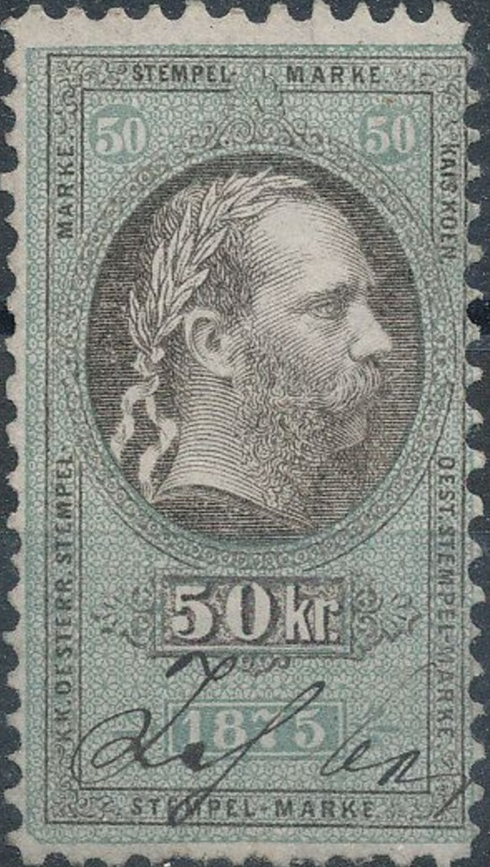
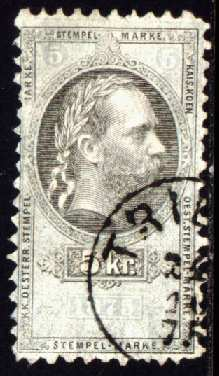
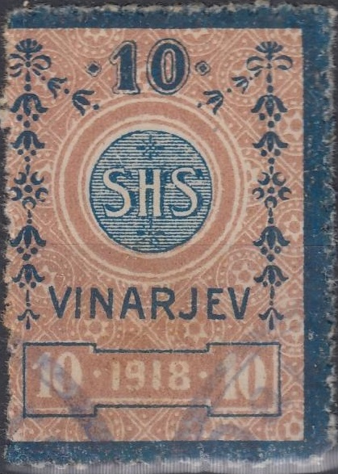
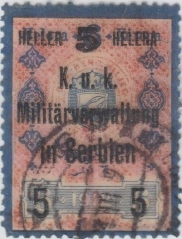
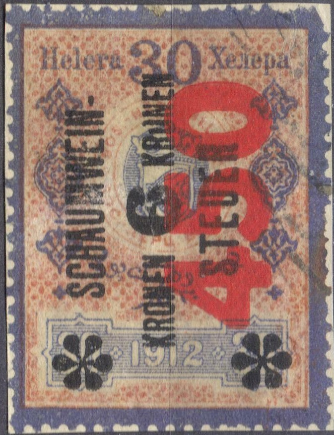
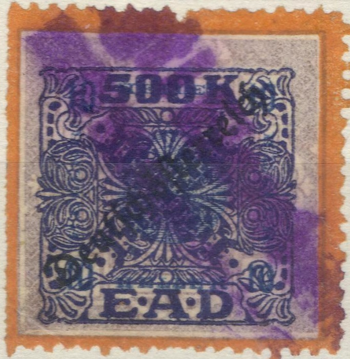

1875 issue
Note: on my website many of the
pictures can not be seen! They are of course present in the
catalogue;
contact me if you want to purchase the catalogue.
New design with emperor (1875):

1875 issue


1877 issue
These stamps exist with year '1875': 1/2 k, 1 k,
2 k, 3 k, 4 k, 5 k, 7 k, 10 k, 12 k, 15 k, 25 k, 36 k, 50 k, 60
k, 75 k, 90 k (all in black and green), 1 Fl, 2 Fl, 2.50 Fl, 3
Fl, 4 Fl, 5 Fl, 6 Fl, 7 Fl, 10 Fl, 12 Fl, 15 Fl and 20 Fl (in
black and red).
With '1877' inscription exist: 1/2 k, 1 k, 2 k, 3 k, 4 k, 5 k, 7
k, 10 k, 12 k, 15 k, 25 k, 36 k, 50 k (all in black and red), 60
k, 75 k, 90 k (all in black and violet), 1 Fl, 2 Fl, 2.50 Fl, 3
Fl, 4 Fl, 5 Fl (all in black and green), 6 Fl, 7 Fl, 10 Fl (all
in black and grey), 12 Fl black and brown, 15 Fl black and brown
and 20 Fl black and blue.
Some fiscal stamps were used for postal purposes, example (certified genuine):

With inscription "1898" the following values exist: 1 h, 2 h, 4 h, 6 h, 8 h, 10 h, 14 h, 20 h, 24 h, 25 h, 26 h, 30 h, 38 h, 40 h, 50 h (issued in two colours sets), 60 h, 64 h, 72 h, 80 h, 88 h (issued in two colours). In a slightly larger design: 1 Kr, 2 Kr, 3 Kr, 4 Kr, 5 Kr (two colours) 6 Kr, 7 Kr, 8 Kr, 10 Kr, 12 Kr (two colours), 15 Kr, 20 Kr (two colours), 30 Kr (two colours), 40 Kr and 50 Kr (two colours).


With inscription "1910"
(similar design as the 1898 issue) exist: 1 h, 2 h, 4 h, 10 h, 14
h, 20 h, 24 h, 25 h, 26 h, 30 h, 38 h, 40 h, 50 h, 60 h, 64 h, 72
h, 88 h, 1 Kr, 2 Kr, 3 Kr, 4 Kr, 5 Kr, 6 Kr, 7 Kr, 8 Kr, 10 Kr,
20 Kr and 50 Kr.
Also a "6" on 24 h overprint (see image above).
They also exist with overprint "Deutsch Osterreich":

Overprinted "Deutsch Osterreich"
Similar stamps, but with inscription "SHS" instead of the image of Franz Joseph were issued for Yugoslavia.

"SHS" issue for Yugoslavia.



Similar stamps for Bosnia, head of
emperor replaced by arms of Bosnia. Also overprinted "K.u.k.
Miltarverwaltung in Serbien" for use in Serbia

"1" on 2 h in two different types (different thickness
of the "1"s).

Bosnia stamps, with overprint "SCHAUMWEIM- STEUER" or
"SCHAUMWEIN- NACHSTEUER" (sparkling wine tax)
In the Bosnia 1912 design, with overprint "SCHAUMWEIN-
STEUER" I have seen the following values (issued in
1919):
"HELLER 25 HELLER" on 1 Kr red and green
"HELLER 50 HELLER" on 1 Kr red and green
"KRONE 1 KRONE" on 1 Kr red and green
"KRONEN 2 KRONEN" on 1 Kr red and green
"KRONEN 3 KRONEN" on 8 h blue and red
"KRONEN 3 KRONEN" on 1 Kr red and green
"KRONEN 9 KRONEN" on 14 h blue and red
"KRONEN 10 KRONEN" on 4 Kr red and green
"KRONEN 12 KRONEN" on 8 h blue and red
"KRONEN 15 KRONEN" on 30 h blue and red
"KRONEN 18 KRONEN" on 14 h blue and red
"KRONEN 21 KRONEN" on 14 h blue and red
"KRONEN 27 KRONEN" on 30 h blue and red
"KRONEN 33 KRONEN" on 30 h blue and red
"KRONEN 69 KRONEN" on 30 h blue and red
"KRONEN 117 KRONEN" on 30 h blue and red
"KRONEN 180 KRONEN" on 64 h blue and red
--------------------------------------------------------------------
"90" (red) on "KRONEN 4 KRONEN" on 26 h blue
and red
"180" (red) on "KRONE 1 KRONE" on 6 h blue
and red
"400" (red) on "KRONEN 6 KRONEN" on 30 h blue
and red
"450" (red) on "KRONEN 6 KRONEN" on 30 h blue
and red
"450" (red) on "KRONEN 8 KRONEN" on 4 h blue
and red
"900" (red) on "KRONEN 9 KRONEN" on 26 h blue
and red
"3600" (red) on "KRONEN 15 KRONEN" on 30 h
blue and red
"7200" (red) on "KRONEN 117 KRONEN" on 38 h
blue and red
"20,000" (red) on "KRONEN 48 KRONEN" on 38
blue and red
"20,000" (red) on "KRONEN 240 KRONEN" on 64
blue and red
--------------------------------------------------------------------
With "SCHAUMWEIN- NACHSTEUER"
overprint
"KRONEN 7.20 KRONEN" on 6 h blue and red


"EFFECTEN UMSATZ STEUER" 1892 in Kreuzer and Gulden
(different design) 2 1/2 k, 5 k, 10 k, 20 k, 50 k, 80 k, 1 G, 2
G, 5 G, 8 G; in 1898 in Heller and Kronen: 10 h, 20 h, 40 h, 50
h, 60 h, 80 h, 1 K, 2 K, 3 K, 4 K, 5 K, 6 K, 8 K, 10 K, 20 K, 30
K, 40 K, 50 K.
I've seen the 1898 values with "Deutsch Osterreich" overprint:

Not sure what these "E.A.D." are, 500 K blue with
violet border, with "Deutsch Osterreich" overprint and
further "10.000 K" surcharge. Also a similar 500 K with
yellow border. I believe these are the above Umsatzsteuer fiscal
stamps?
'Austria Revenues' issued by J.Barefoot Ltd.
'Forbin Catalogue' 1915

{kind=link}
{kind=link}
{kind=link}
{kind=link}
{kind=link}
{kind=link}